1. ภาพรวมและกติกาของระบบ
ระบบใช้จองรถบริษัท รับรถ คืนรถ และติดตามสถานะรถ ผู้ใช้แบ่งเป็น 3 กลุ่ม แต่ละกลุ่มเห็นเมนูไม่เหมือนกัน
พนักงาน / ผู้ขับ
- จองรถ ดูคิวว่าง
- รับรถ คืนรถ
- ดูประวัติการจองของตัวเอง
เจ้าหน้าที่ รปภ.
- จดเลขไมล์และสภาพรถตอนรถกลับเข้าบริษัท แทนผู้ขับ
- ตามรถที่ยังไม่คืน
แอดมิน
- จัดการรถ การจอง ผู้ใช้
- ตั้งจุดพิกัด ดูรายงานและบันทึกระบบ
- ปิดงานแทนผู้ขับ
วงจรของการจอง
| สถานะ | ความหมาย | เกิดขึ้นเมื่อ |
|---|---|---|
| จองแล้ว (ป้าย "รอเช็คอิน") | จองคิวไว้แล้ว ยังไม่ถึงเวลาไป | กดยืนยันการจอง |
| ขาไป (ป้าย "กำลังใช้งาน") | รถอยู่กับผู้ขับ | ถึงเวลาไปที่จอง ระบบเช็คอินให้ หรือผู้ขับสแกนรับรถเอง |
| คืนแล้ว | บันทึกการคืนและเลขไมล์แล้ว | ผู้ขับ/รปภ./แอดมินบันทึกคืน |
| ยกเลิก | ยกเลิกก่อนถึงเวลารับรถ | ผู้ขับหรือผู้จองกดยกเลิก หรือแอดมินยกเลิก |
| ยกเลิก (ไม่ได้ใช้รถ) | รถถูกเช็คอินแล้วแต่ไม่ได้ใช้จริง ปล่อยรถคืน | กดปุ่ม "ไม่ได้ใช้รถ" |
| ยกเลิก (ไม่มาใช้งาน) | ผ่านเวลากลับไปแล้วโดยไม่มีใครมารับรถ | ระบบปล่อยคิวเอง |
ป้ายอื่นที่เห็นในหน้าแอดมิน: เลยเวลาคืน (ขาไปและเกินเวลากลับที่จอง) • คืนช้า (คืนแล้วแต่เกินเวลากลับ 60 นาที) • ข้ามคืน (จองให้กลับเช้าวันถัดไป) • ไม่มาใช้งาน
รหัสจอง
กติกาที่ระบบบังคับ (ทุกคนควรรู้)
| เรื่อง | กติกา |
|---|---|
| จองล่วงหน้า | ได้ไม่เกิน 90 วัน |
| เวลาไป-กลับ | เวลาไปและเวลากลับ ห้ามเป็นเวลาเดียวกัน ถ้าเวลากลับน้อยกว่าเวลาไป ระบบถือว่า ข้ามคืน (กลับเช้าวันถัดไป) |
| จองซ้อน | รถคันเดียวกันจองช่วงเวลาซ้อนกันไม่ได้ และ ผู้ขับคนเดียวกันก็จองเวลาชนกันไม่ได้ |
| เวลาที่ผ่านมาแล้ว | จองช่วงเวลาที่ผ่านไปแล้วไม่ได้ |
| รถเช็คระยะ/ซ่อม | จองไม่ได้ จนกว่าจะถึงวันที่คาดว่าเสร็จ (วันนั้นเองยังรอแอดมินกดยืนยันว่ารถพร้อม) |
| ผู้ร่วมเดินทาง | ได้ประมาณ 40 คนต่อการจอง |
| เช็คอินรับรถเอง | ทำได้ล่วงหน้าก่อนเวลาไป ไม่เกิน 60 นาที (ถึงเวลาไปแล้วระบบเช็คอินให้เอง) |
| เวลาคืนรถ | ห้ามเป็นเวลาในอนาคต (เกิน 10 นาทีจากปัจจุบัน) และห้ามก่อนเวลารับรถ |
| เลขไมล์ตอนคืน | ต้องมากกว่าเลขไมล์ตอนออกเสมอ (เลขไมล์ไม่ลดลง) ถ้าวิ่งเกิน 1,500 กม. ในทริปเดียว ผู้ขับบันทึกเองไม่ได้ ต้องให้แอดมินบันทึก |
| ใครคืนรถแทนได้ | เฉพาะผู้ขับตัวจริงของรายการ (หรือแอดมิน/รปภ.) |
2. ผู้ดูแลระบบ (แอดมิน)
เมนูซ้ายมือ: หน้าหลัก (Dashboard) • จัดการข้อมูลรถยนต์ • ปฏิทินงานวิ่งรถ • จัดการการจอง • บัญชีผู้ใช้ • จุดตรวจพิกัด • จดเลขไมล์รถคืน • รายงาน • บันทึกระบบ กระดิ่งมุมขวาบนแสดงการแจ้งเตือนของแอดมิน ปุ่มฟันเฟืองมุมซ้ายล่างมี ออกจากระบบ
2.1 หน้าหลัก (Dashboard)
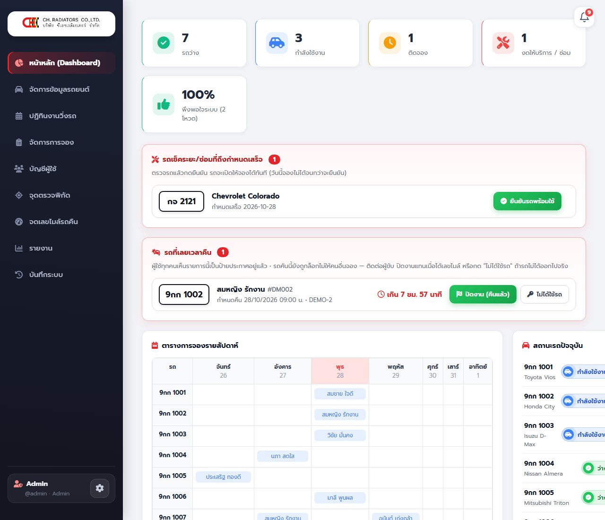
ส่วนต่างๆ จากบนลงล่าง:
- การ์ดสถานะรถ: รถว่าง • กำลังใช้งาน • ติดจอง • งดให้บริการ/ซ่อม • ความพึงพอใจต่อระบบ
- คำขอคืนรถนอกจุดบริษัท (ขึ้นเมื่อมีคำขอ) — ผู้ขับที่คืนในจุดไม่ได้ส่งคำขอมา แถวแสดงทะเบียน ผู้ขับ เหตุผล เลขไมล์คืน/ออก สาเหตุที่ตำแหน่งไม่ผ่าน ระยะห่าง IP เวลาที่ขอ ลิงก์ ดูแผนที่ รูปไมล์ รูปสภาพรถ
- ตรวจรูปไมล์และตำแหน่งก่อน แล้วกด อนุมัติ (คืนแล้ว) → ระบบบันทึกคืนรถทันทีด้วยเลขไมล์ที่ผู้ขับส่งมา
- หรือกด ปฏิเสธ → ผู้ขับต้องคืนรถในจุดบริษัท
- ทั้งสองอย่างมีหน้าต่างให้ยืนยันก่อน และมีบันทึกในระบบ
- รถเช็คระยะ/ซ่อมที่ถึงกำหนดเสร็จ — ตรวจรถแล้วกด ยืนยันรถพร้อมใช้ รถเปิดให้จองทันที (ถึงวันที่คาดว่าเสร็จแล้ว ระบบยังกันรถไว้จนกว่าจะกดยืนยัน)
- รถที่เลยเวลาคืน — ผู้ใช้ทุกคนเห็นรายการนี้เป็นป้ายประกาศ แอดมินมีปุ่ม ปิดงาน (คืนแล้ว) ปิดแทนผู้ขับ และ ไม่ได้ใช้รถ ถ้าไม่ได้ออกไปจริง ติดต่อผู้ขับจากเบอร์ที่แสดง
- ตารางการจองรายสัปดาห์ และ สถานะรถปัจจุบัน ทุกคัน
2.2 จัดการข้อมูลรถยนต์
หน้านี้มี 2 แท็บ: ข้อมูลรถ และ เช็คระยะ / ซ่อม ด้านล่างเป็นตาราง "รถยนต์ในระบบ" (รูป ทะเบียน/รุ่น เลขไมล์ ประกันภัย พ.ร.บ. เช็คระยะล่าสุด สถานะ) ปุ่มจุดสามจุดท้ายแถวมีเมนู แก้ไขข้อมูลรถ • ประวัติซ่อมบำรุง • ลบรถ
เพิ่มรถใหม่
- แท็บ ข้อมูลรถ (หัวฟอร์มเขียนว่า "เพิ่มข้อมูลรถยนต์ใหม่")
- กด เลือกรูปรถ เพื่ออัปโหลดรูป (ไม่บังคับ ถ้าไม่ใส่ระบบใช้รูปแทน "ไม่มีรูปรถ")
- กรอกช่องที่มี * ให้ครบ: ทะเบียนรถยนต์ * • ยี่ห้อ * (เช่น Toyota) • รุ่น * (เช่น Hilux Vigo)
- ช่องอื่น: สี • เลขไมล์ล่าสุด (กม.) (ใส่เลขปัจจุบันของรถ ระบบใช้เป็นเลขตั้งต้นตอนจอง)
- ส่วน วันครบกำหนด: ประกันภัยหมดอายุ • พ.ร.บ. หมดอายุ • เช็กระยะล่าสุด (วันที่ทำเสร็จแล้ว) — ใส่ไว้เพื่อให้ระบบเตือนก่อนหมดอายุ
- กด บันทึกข้อมูลรถ (ปุ่ม "ล้างข้อมูลฟอร์ม" ใช้เคลียร์ช่องที่กรอกไว้)
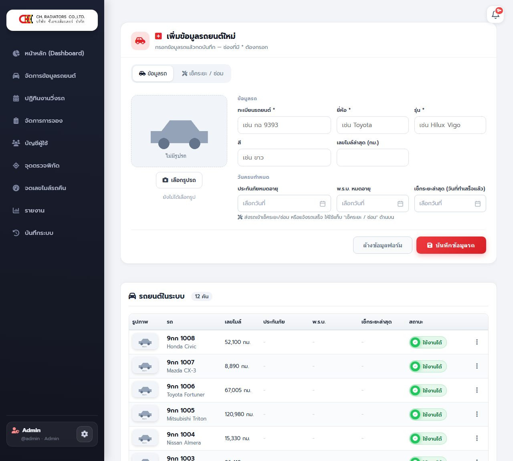
แก้ไขหรือลบรถ
- กดจุดสามจุดท้ายแถวรถ → แก้ไขข้อมูลรถ ข้อมูลถูกใส่ลงฟอร์มด้านบน แก้แล้วกด "บันทึกข้อมูลรถ"
- ลบรถ ใช้เมื่อเลิกใช้รถคันนั้นจริงๆ (มีหน้าต่างยืนยัน) ถ้ารถยังมีประวัติการจอง ควรตรวจสอบก่อนลบ
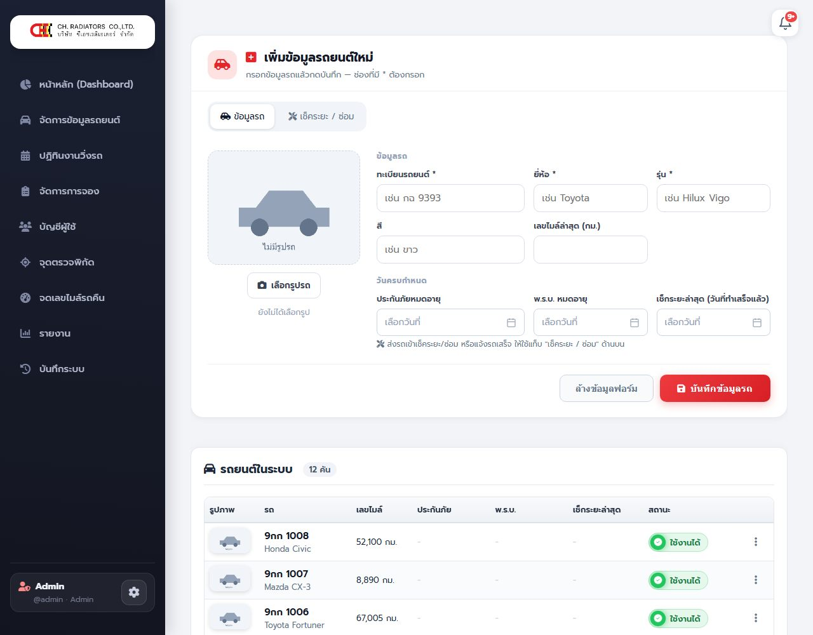
ส่งรถเข้าเช็คระยะ / ซ่อม
- กดจุดสามจุดท้ายแถวรถ → ประวัติซ่อมบำรุง (หรือเปิดแท็บ "เช็คระยะ / ซ่อม" ที่ฟอร์มหลังจากเลือกรถแล้ว)
- ส่วนบนแสดงสถานะ: การ์ดเขียว "… พร้อมใช้งาน — เปิดให้จองตามปกติ"
- ในกรอบ ส่งรถเข้าเช็คระยะ / ซ่อม เลือกประเภทงาน: เช็คระยะ • ซ่อม • เปลี่ยนยาง • อื่นๆ (เลือก "อื่นๆ" แล้วพิมพ์ระบุงานเอง)
- ตั้ง คาดว่าเสร็จวันที่ เลือกวันที่เอง หรือกดปุ่มลัด เสร็จอีก 1 วัน / 3 วัน / 1 สัปดาห์ / 2 สัปดาห์ (ไม่ระบุวันก็ได้ แต่รถจะปิดจองไม่มีกำหนดจนกว่าจะกดว่าเสร็จ)
- ช่อง หมายเหตุ (ไม่บังคับ)
- กด ส่งรถเข้าเช็ค/ซ่อม ระบบตั้งสถานะรถเป็น "เช็คระยะ" ผู้ใช้เห็นวันที่คาดว่าเสร็จ และจองก่อนวันนั้นไม่ได้
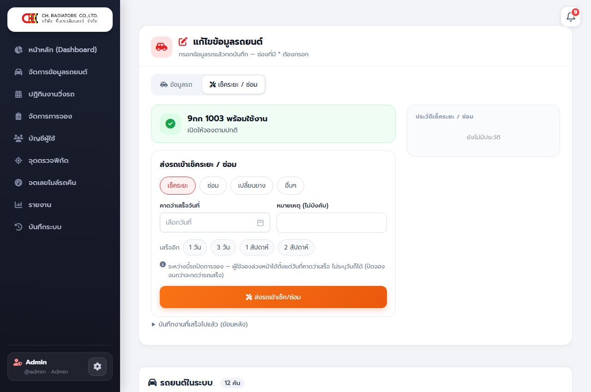
มีคำบรรยายบนจอ (ไม่มีเสียง) กดเล่น/หยุด หรือกดเต็มจอได้
ระหว่างที่รถอยู่ที่อู่
- การ์ดสีส้มบอกว่า "… กำลังเช็คระยะ" วันที่ส่งรถ วันที่คาดว่าเสร็จ และเหลือกี่วัน
- เลื่อนวัน: แก้วันที่ในช่องด้านขวาของการ์ด แล้วกด เปลี่ยนวัน
เมื่อรถเสร็จ
- ในกรอบ รถเสร็จแล้วใช่ไหม? ตรวจ เสร็จวันที่ (ค่าตั้งต้น = วันนี้) เลขไมล์ (ขึ้นให้จากการคืนล่าสุด) และใส่ ค่าใช้จ่าย (บาท) (ตัวเลขมีจุลภาคให้เอง)
- เปิด "เพิ่มเติม" เพื่อใส่ กำหนดเช็คครั้งถัดไป และ หมายเหตุ
- กด รถเสร็จแล้ว — เปิดให้จอง รถกลับเป็น "ว่าง" และเข้าประวัติซ่อม
บันทึกงานที่เสร็จไปแล้ว (ย้อนหลัง)
ถ้ารถไม่ได้ปิดจอง แต่ต้องการบันทึกประวัติ ให้เปิดส่วน บันทึกงานที่เสร็จไปแล้ว (ย้อนหลัง) กรอก ทำอะไร • เลขไมล์ • วันที่เริ่ม • เสร็จวันที่ • ค่าใช้จ่าย • กำหนดเช็คครั้งถัดไป แล้วกด บันทึกประวัติ
2.3 ปฏิทินงานวิ่งรถ
ดูภาพรวมการใช้รถทุกคันในรูปปฏิทิน เห็นว่าวันไหนรถคันไหนมีงานและใครเป็นผู้ขับ ใช้วางแผนและดูว่ารถช่วงไหนว่าง
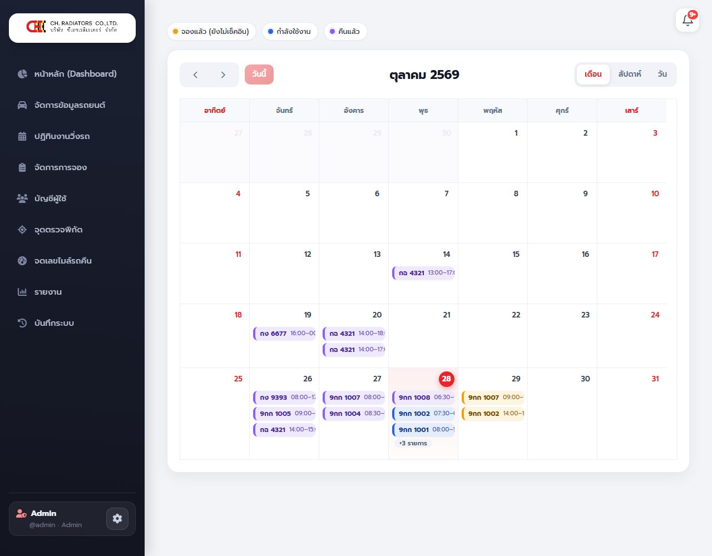
2.4 จัดการการจอง
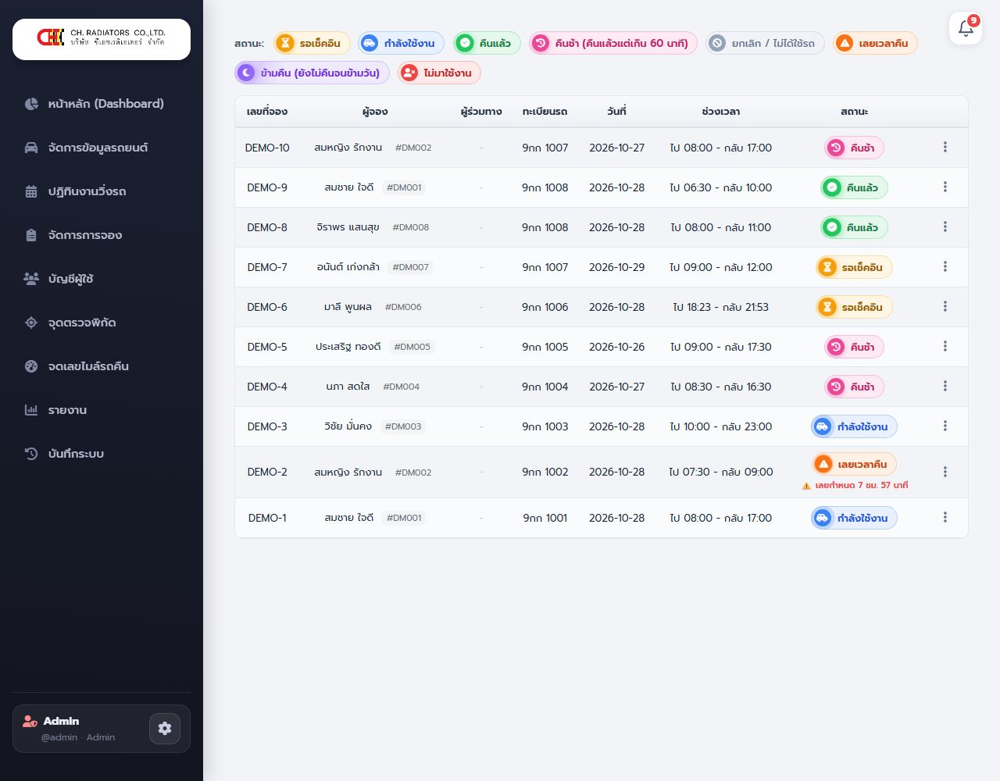
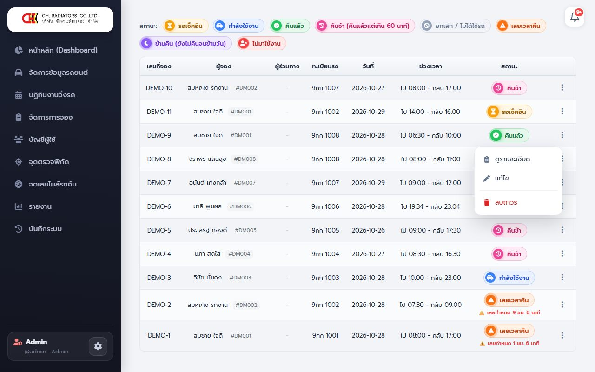
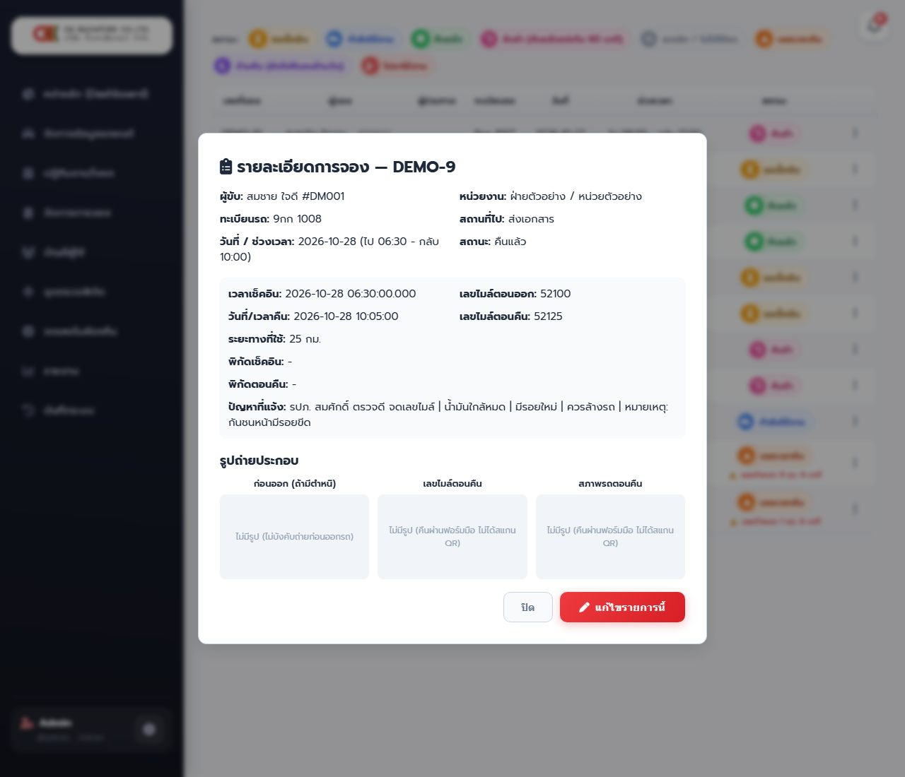
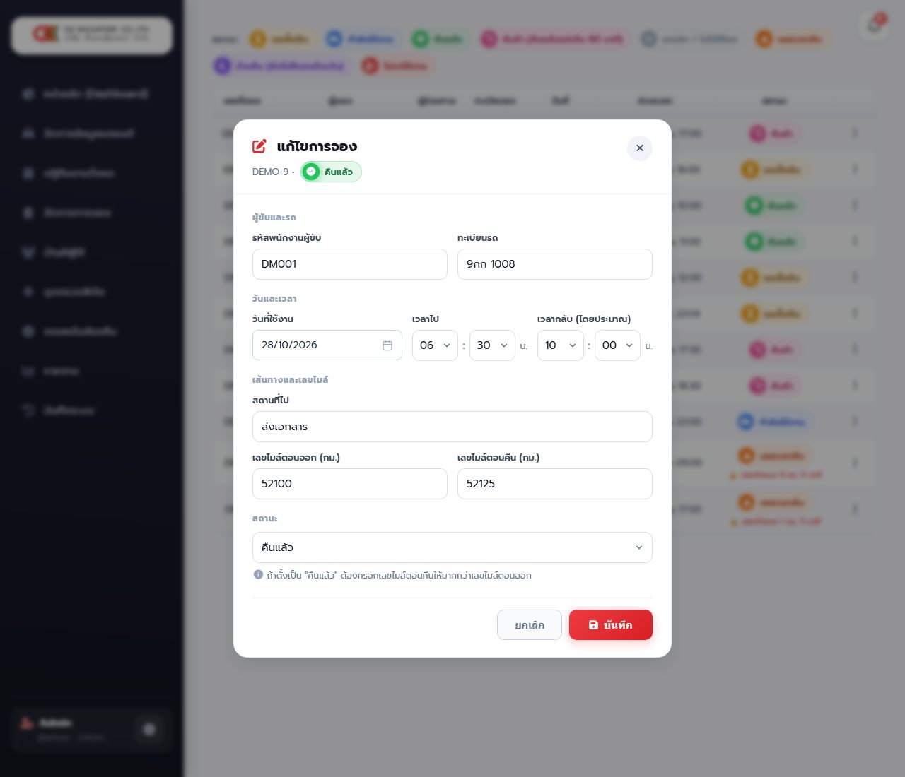
- แถบป้ายสีด้านบนบอกความหมายสถานะ: รอเช็คอิน • กำลังใช้งาน • คืนแล้ว • คืนช้า (คืนแล้วแต่เกิน 60 นาที) • ยกเลิก/ไม่ได้ใช้รถ • เลยเวลาคืน • ข้ามคืน • ไม่มาใช้งาน
- ตารางแสดง เลขที่จอง ผู้จอง ผู้ร่วมเดินทาง ทะเบียน วันที่ ช่วงเวลา สถานะ รายการเลยเวลาคืนบอกว่าเกินกี่ชม./นาที
กดจุดสามจุดท้ายแถว เลือก:
| เมนู | ใช้ทำอะไร |
|---|---|
| ดูรายละเอียด | เวลาเช็คอิน เลขไมล์ตอนออก/คืน ระยะทางที่ใช้ พิกัดเช็คอิน/คืน (บอกว่าอยู่ในหรือนอกจุด) ปัญหาที่แจ้ง/หมายเหตุ (รวมตัวเลือกสภาพรถจาก รปภ.) และ รูปถ่ายประกอบ (รูปไมล์ รูปสภาพรถ รูปที่ รปภ. ถ่าย) |
| แก้ไข | แก้ได้: รหัสพนักงานผู้ขับ • ทะเบียนรถ • วันที่ใช้งาน • เวลาไป • เวลากลับ • สถานที่ไป • เลขไมล์ตอนออก • เลขไมล์ตอนคืน • สถานะ (ระบบตรวจการจองซ้อนทุกครั้งที่บันทึก) ใช้แก้ข้อมูลที่ผู้ขับ/ รปภ. กรอกผิด |
| ยกเลิกการจอง | ยกเลิกรายการที่ยังไม่คืน (ยกเลิกไม่ได้ถ้าคืนแล้วหรือยกเลิกไปแล้ว) |
| ลบถาวร | ลบรายการออกจากระบบ ย้อนกลับไม่ได้ ใช้เฉพาะรายการที่ผิดพลาดจริงๆ |
2.5 บัญชีผู้ใช้
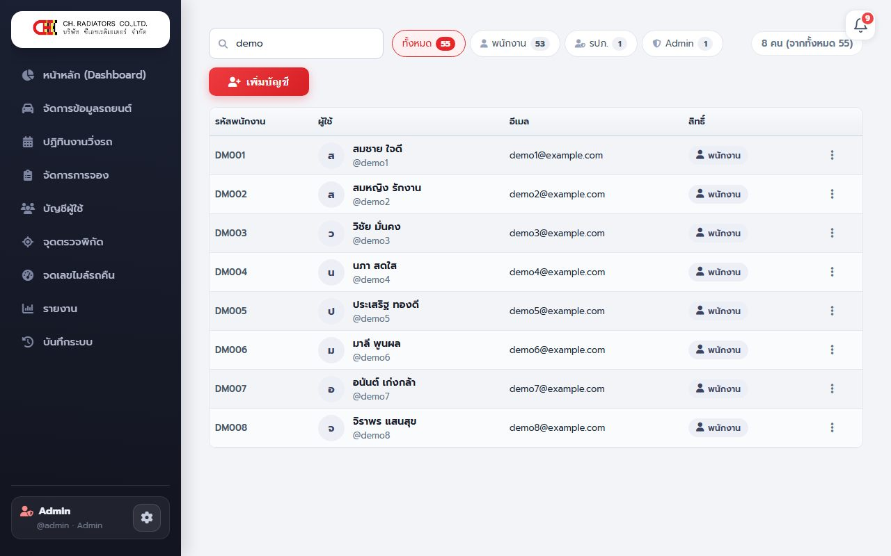
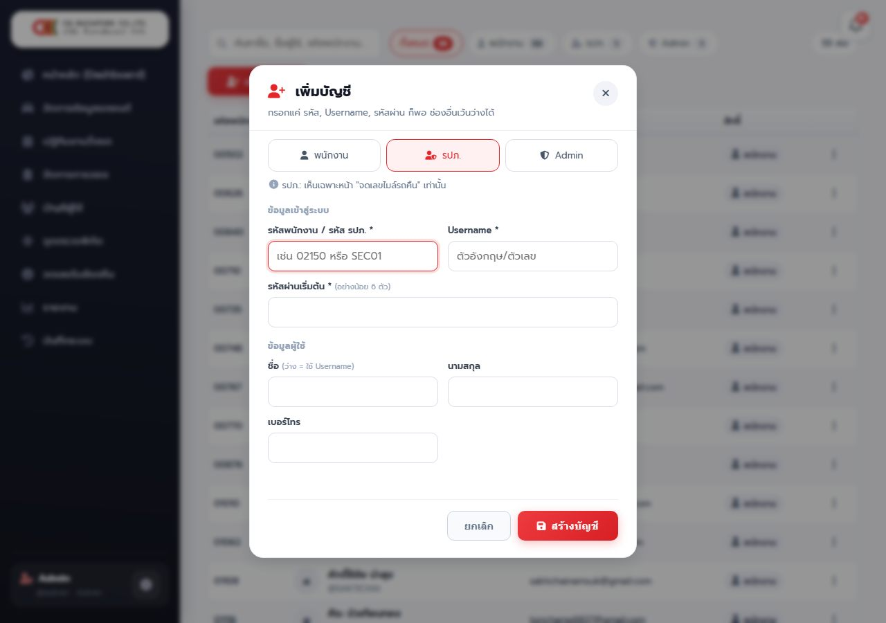
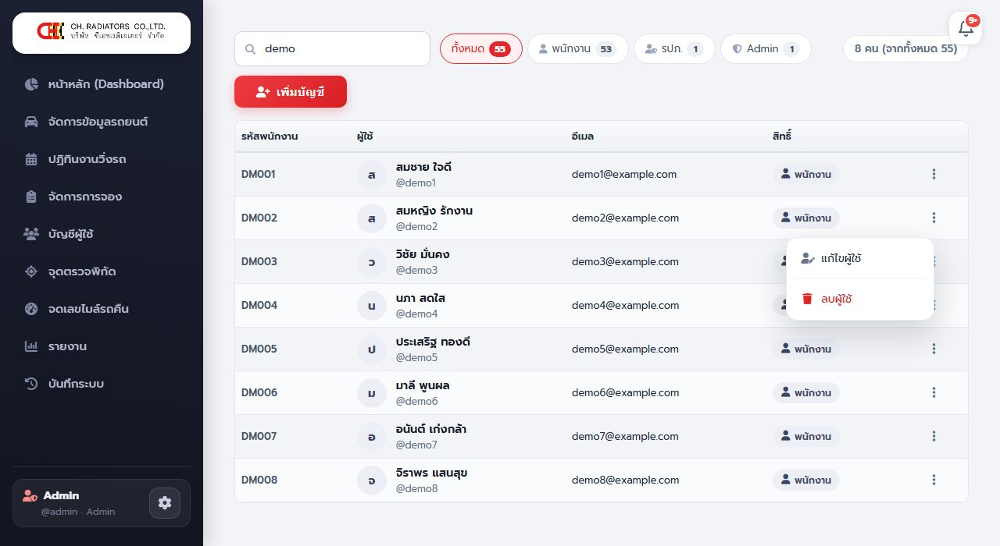
มีคำบรรยายบนจอ (ไม่มีเสียง) กดเล่น/หยุด หรือกดเต็มจอได้
- ช่องค้นหา ("ค้นหาชื่อ, ชื่อผู้ใช้, รหัสพนักงาน...") พิมพ์แล้วตารางกรองทันที
- ปุ่มกรอง: ทั้งหมด / พนักงาน / รปภ. / Admin พร้อมจำนวน และมุมขวาแสดง "N คน (จากทั้งหมด M)"
เพิ่มบัญชี (พนักงาน / รปภ. / Admin)
- กด เพิ่มบัญชี เลือก ประเภท: พนักงาน / รปภ. / Admin
- กรอก รหัสพนักงาน / รหัส รปภ. * (เช่น
02150หรือSEC01ใช้ตัวเลข/ตัวอักษรอังกฤษ/ขีดล่าง/ขีดกลาง ไม่เกิน 20 ตัว) และ Username * (ตัวอังกฤษ/ตัวเลข/จุด/ขีด/@ ยาว 3–50 ตัว) - ตั้ง รหัสผ่านเริ่มต้น * อย่างน้อย 6 ตัวอักษร แล้วแจ้งผู้ใช้ให้เปลี่ยนเองภายหลัง
- ช่อง ชื่อ / นามสกุล / เบอร์โทร / อีเมล เว้นว่างได้ หรือใส่
-(รปภ. ไม่ต้องมีอีเมล) ถ้าใส่อีเมลต้องเป็นรูปแบบอีเมลที่ถูกต้อง ชื่อ/นามสกุลไม่เกิน 100 ตัว เบอร์ไม่เกิน 20 ตัว - กด สร้างบัญชี
| ข้อความ | สาเหตุ |
|---|---|
| Username หรือรหัสพนักงานนี้มีบัญชีในระบบแล้ว | ซ้ำกับบัญชีเดิม ใช้ค่าอื่น |
| ชื่อ Username นี้เป็นชื่อสงวน | ใช้ชื่อบางคำไม่ได้ (เช่นชื่อระบบ) |
| รหัสผ่านต้องมีอย่างน้อย 6 ตัวอักษร | รหัสผ่านสั้นไป |
แก้ไข รีเซ็ตรหัสผ่าน หรือลบผู้ใช้
- กดจุดสามจุดท้ายแถว → แก้ไขผู้ใช้ แก้ข้อมูล เปลี่ยนสิทธิ์ (พนักงาน / รปภ. / Admin) และ ตั้งรหัสผ่านใหม่ (เว้นว่างถ้าไม่เปลี่ยน) ระบบเก็บรหัสผ่านแบบเข้ารหัส ไม่มีใครดูรหัสเดิมได้
- ลบผู้ใช้: ลบบัญชีตัวเองไม่ได้ และลบบัญชี Admin ผ่านหน้าเว็บไม่ได้ (ต้องให้ผู้ดูแลฐานข้อมูลทำ) ลบได้เฉพาะพนักงาน/รปภ. (มีหน้าต่างยืนยันก่อนลบ)
admin_whitelist.php ด้วย ส่วนบัญชี รปภ. ใช้ได้ทันที2.6 จุดตรวจพิกัด
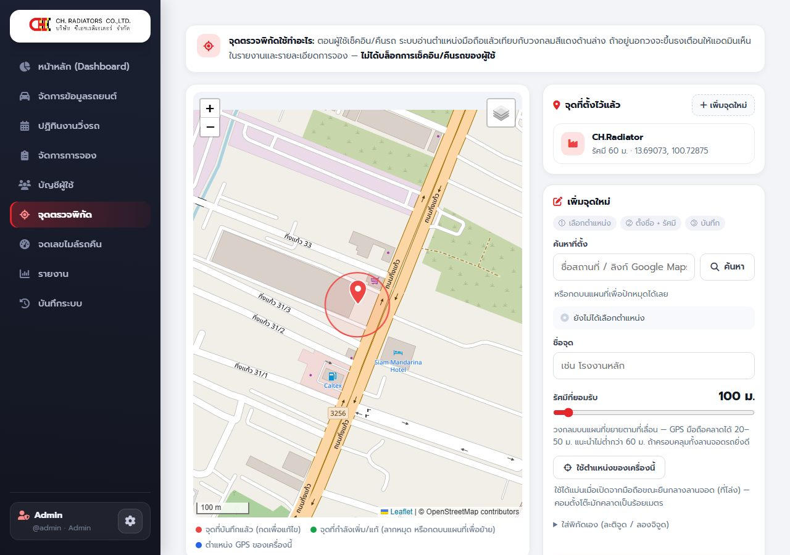
กำหนดจุดของบริษัทที่ผู้ขับคืนรถเองได้ (ถ้ายังไม่ตั้งจุดเลย ระบบจะไม่บังคับตรวจตำแหน่ง)
- เลือกตำแหน่ง — พิมพ์ชื่อสถานที่หรือวางลิงก์ Google Maps ในช่อง "ค้นหาที่ตั้ง" แล้วกด ค้นหา หรือคลิกบนแผนที่เพื่อปักหมุด ลากหมุดเพื่อปรับ หรือกด ใช้ตำแหน่งของเครื่องนี้ (แม่นเมื่อเปิดจากมือถือขณะยืนกลางลานจอด) หรือกรอกพิกัดเองในส่วน "ใส่พิกัดเอง (ละติจูด / ลองจิจูด)"
- ตั้งชื่อจุด + รัศมี — ใส่ชื่อ เช่น โรงงานหลัก ลากแถบ รัศมีที่ยอมรับ (ช่วง 50–1,000 เมตร ค่าตั้งต้น 100) วงกลมบนแผนที่ขยายตาม แนะนำไม่ต่ำกว่า 60 ม. และครอบคลุมทั้งลานจอดรถ เพราะ GPS มือถือคลาดได้ 20–50 ม.
- บันทึก — กด บันทึกจุดนี้
- รายการ "จุดที่ตั้งไว้แล้ว" อยู่ด้านขวาบน กดเพื่อดูบนแผนที่ แก้ไข หรือลบ ปุ่ม เพิ่มจุดใหม่ ใช้เพิ่มจุดที่สอง (เช่น คลังสินค้า)
- สีบนแผนที่: แดง = จุดที่บันทึกแล้ว • เขียว = จุดที่กำลังเพิ่ม/แก้ • น้ำเงิน = ตำแหน่ง GPS ของเครื่องนี้
2.7 จดเลขไมล์รถคืน
แอดมินใช้หน้า รปภ. ได้เหมือนกัน (ดู คู่มือ รปภ.) รายการที่แอดมินจดจะมีหมายเหตุ "แอดมิน … จดเลขไมล์" และแก้/ยกเลิกได้ในวันเดียวกันเหมือนของ รปภ. ต่างจาก รปภ. ตรงที่แอดมินแก้เลขไมล์ในหน้า "จัดการการจอง" ได้ทุกรายการ
2.8 รายงาน
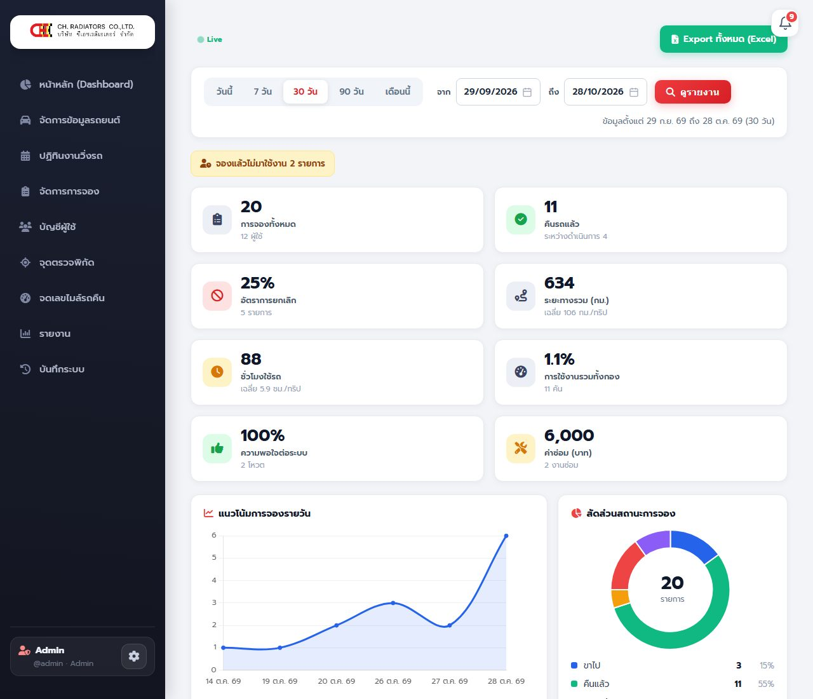
- เลือกช่วงเวลา: วันนี้ / 7 วัน / 30 วัน / 90 วัน / เดือนนี้ หรือกำหนดวันที่ จาก–ถึง เองแล้วกด ดูรายงาน
- ดูการ์ดสรุป: การจองทั้งหมด • คืนรถแล้ว • อัตรายกเลิก • ระยะทางรวม (กม.) และเฉลี่ยต่อเที่ยว • ชั่วโมงใช้รถ • การใช้งานรวมทั้งกอง • ความพึงพอใจ • ค่าซ่อม (บาท)
- เลื่อนลงดูกราฟ แนวโน้มการจองรายวัน สัดส่วนสถานะ การใช้งานรายคัน ผู้ขับ ฝ่าย/แผนก และช่วงเวลาที่ใช้รถหนาแน่น
- ป้ายสีเหลืองด้านบนบอกจำนวนการจองที่ไม่มาใช้งาน
- กด Export ทั้งหมด (Excel) เพื่อส่งออกไฟล์ไปทำต่อ
2.9 บันทึกระบบ (Audit Log)
- เลือกช่วง: วันนี้ / 7 วัน / 30 วัน / 90 วัน หรือ จาก–ถึง เอง
- ช่อง ค้นหา พิมพ์ได้: ชื่อผู้ทำ / ทะเบียน / เลขที่จอง / IP / ข้อความ แล้วกด ค้นหา
- ปุ่มหมวด (chips) กรองตามประเภท: เข้าสู่ระบบ • การจอง • การใช้รถ • งานแอดมิน • ผู้ใช้
- ตารางคอลัมน์: เวลา • ประเภท • ผู้ทำ • รายการ (ข้อความสรุปอ่านรู้เรื่องในบรรทัดเดียว)
- กด Export CSV เพื่อส่งออก
เหตุการณ์ที่บันทึก เช่น เข้าสู่ระบบ/ไม่สำเร็จ • จอง/ยกเลิก/ปล่อยรถ • เช็คอิน (รวมอัตโนมัติ) • คืนรถ • แก้ไข/ยกเลิกการจดของ รปภ. • คำขอคืนนอกจุด/อนุมัติ/ปฏิเสธ • ส่งรถซ่อม/ยืนยันพร้อมใช้ • แอดมินแก้ไข/ยกเลิก/ลบการจอง • เพิ่ม/แก้/ลบผู้ใช้ • เพิ่ม/แก้/ลบจุดพิกัด เก็บไว้ 180 วัน ไม่เก็บรหัสผ่าน
3. กฎที่ระบบทำให้เองอัตโนมัติ
| เหตุการณ์ | สิ่งที่ระบบทำ |
|---|---|
| ถึงเวลาไปที่จอง | เช็คอินให้เป็น "ขาไป" (เฉพาะรถที่ไม่มีคนใช้ค้างอยู่ และ 1 คันต่อ 1 คิว) บันทึกว่าเป็นการเช็คอินอัตโนมัติ เวลาเช็คอิน = เวลาไปที่จอง |
| เลยเวลากลับโดยไม่มีใครมารับรถเลย (ยังเป็น "จองแล้ว") | ปล่อยคิวเป็น "ยกเลิก (ไม่มาใช้งาน)" และแจ้งผู้ขับ |
| รถ "ขาไป" เลยเวลากลับที่จองไว้ | แจ้งเตือนผู้ขับและแอดมิน ขึ้นป้ายประกาศรถเลยเวลาคืนให้ทุกคนเห็น และขึ้นแถบเตือนที่หน้า รปภ. |
4. แก้ปัญหาที่พบบ่อย และเมื่อไหร่ต้องแจ้งแอดมิน
| ปัญหา | วิธีแก้ |
|---|---|
| รถขึ้นว่าว่างแต่จองไม่ได้ (รถเช็คระยะ) | วันที่เลือกต้องไม่ก่อนวันที่คาดว่ารถจะเสร็จ และวันที่เสร็จเองต้องรอแอดมินยืนยัน แจ้งแอดมินให้กด "ยืนยันรถพร้อมใช้" |
| รปภ. จดรถผิดคัน | กด "แก้ไข" แล้ว "ยกเลิกการจด" (วันเดียวกัน) แล้วจดใหม่ที่คันที่ถูก |
| ลืมรหัสผ่าน | ใช้ "ลืมรหัสผ่าน?" ที่หน้าเข้าสู่ระบบ หรือให้แอดมินตั้งรหัสใหม่ให้ |
| เข้าหน้าแอดมินไม่ได้ (บัญชี Admin ใหม่) | ผู้ดูแลเซิร์ฟเวอร์ต้องเพิ่มรหัสผู้ใช้ใน admin_whitelist.php |
| หน้าเว็บยังเป็นแบบเก่าหลังมีการอัปเดต | กด Ctrl + F5 เพื่อล้างไฟล์เก่าของเบราว์เซอร์ (มือถือ: ปิดแท็บแล้วเปิดใหม่) |
5. เช็กลิสต์ประจำวัน
แอดมิน
- เช้า: ดู Dashboard — คำขอคืนนอกจุด, รถรอยืนยันพร้อมใช้, รถเลยเวลาคืน
- ตรวจกระดิ่ง: ประกัน/พ.ร.บ. ใกล้หมดอายุ, ปัญหาที่ผู้ขับแจ้ง
- สิ้นเดือน: ดูรายงาน → Export Excel